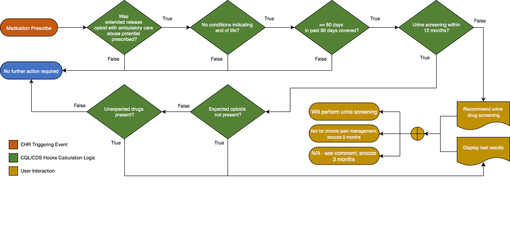

When prescribing opioids for chronic pain, providers should use urine drug testing before starting opioid therapy and consider urine drug testing at least annually to assess for prescribed medications as well as other controlled prescription drugs and illicit drugs (recommendation category: B, evidence type: 4).
The GetDrugNamesFromScreeningCodes(value List<FHIR.Coding>) function extracts the drug name from the display value for the given code. The expectation is that the drug name will be at the beginning of the string and will end with any of the following characters/strings: ‘[‘, ‘tested’, ‘cutoff’. Anything in the string that precedes the first occurrence of any of those characters/strings will be assumed to be the drug name.
The "Missing Opioids" set is identified by comparing the medication code displays with the urine drug screen code's displays - a dependency that implementers should be aware of.
Patient is being prescribed opioids for chronic pain.
Patient does not appear to be at end of life.
Patient has not had a urine drug screening within the last 12 months
Display a message indicating that urine drug testing results are not available within the last 12 months. Patient should have a urine drug test performed.
One of the following responses should be required:
Patient has a urine drug screening but does test not positive for opioids, or tests positive for other drugs
Display a message indicating that urine drug testing results are inconsistent with the patient's medication regimen.
The following artifacts formalize the description of the logic and behavior defined by this recommendation.
{% include common-libraries-start.html %}